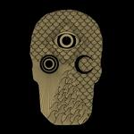

Music Reviews
-
Hamilton Leithauser Black Hours
The Walkmen lead singer releases his solo debut after 6 albums and over 13 years with the band. The result is a balancing act that charts new directions in instrumentation and arrangement while maintaining some signature aesthetic elements of the New York City quintet.
Ben Jones reviews... -
Rival Sons Great Western Valkyrie
Rival Sons continue their prolific output, and their 4th LP comes along and is more of the same. Sashaying rhythm sections lay down foundations for irresistible garage-tinged hooks and soaring vocals, channeling the likes of Hendrix, Zeppelin and The Stones from their melting pot. Rival Sons pull no punches, and rehash a retro-rock past into a seductive modern day panegyric.
Carl Purvis thinks he's a peacock... -

Parquet Courts Sunbathing Animal
The latest effort by the Texas-via-Brooklyn transplants widens the scope of influences introduced in Light Up Gold, becoming more refined and pointed as they begin to settle into a new pattern whilst playing some of those old tricks.
Juan Edgardo Rodríguez reviews... -

Popstrangers Fortuna
Popstrangers have followed up their excellent debut with a record boasting a much different sound to its predecessor. A lot of the rawness and unpredictability has gone, and has instead been replaced by a sense of sunbaked refrain that shows another string to the trio's bow. Much more pop, and much less strange.
Carl Purvis reviews... -

Teleman Breakfast
On first play, Teleman’s Breakfast could have you thinking ‘a wimpy Julian Lennon’ or ‘poor man’s Flaming Lips’. Do repeated plays confirm the initial thoughts or are there hidden treasures in the debut offering from the ex-Pete And The Pirates boys?
Graeme Marsh looks under the covers... -

Young Widows Easy Pain
Sludge-garage-post-hardcore bastard child Young Widows emerge with their fourth record, a trite but sometimes engaging display of vulgar forcefulness.
Stephen Wragg reviews... -
Tobacco Ultima II Massage
Thomas Fec, better known as Tobacco of Black Moth Super Rainbow, releases his third solo album Ultima II Massage.
Sean Caldwell reviews... -

Hundred Waters The Moon Rang Like a Bell
The wildly creative Gainesville, Florida outfit follow their folk-laced electronic debut with an ornate pop record that blends sparse, soulful soundscapes with sleekly ominous dance cuts.
Juan Edgardo Rodríguez reviews... -

Coldplay Ghost Stories
Released in the wake of Chris Martin's ending relationship, Ghost Stories is a beautiful, fragile record that reflects the love that has been lost, but still maintains an underlying current of hope for the future.
Joe Marvilli thinks Coldplay has regained its magic... -

Little Dragon Nabuma Rubberband
Album number four from the Swedish electronica quintet sees a band trying to find their place in the world.
Joe Rivers is sure he had the phrase 'Nabuma Rubberband' on one of those Captcha verification screens once...